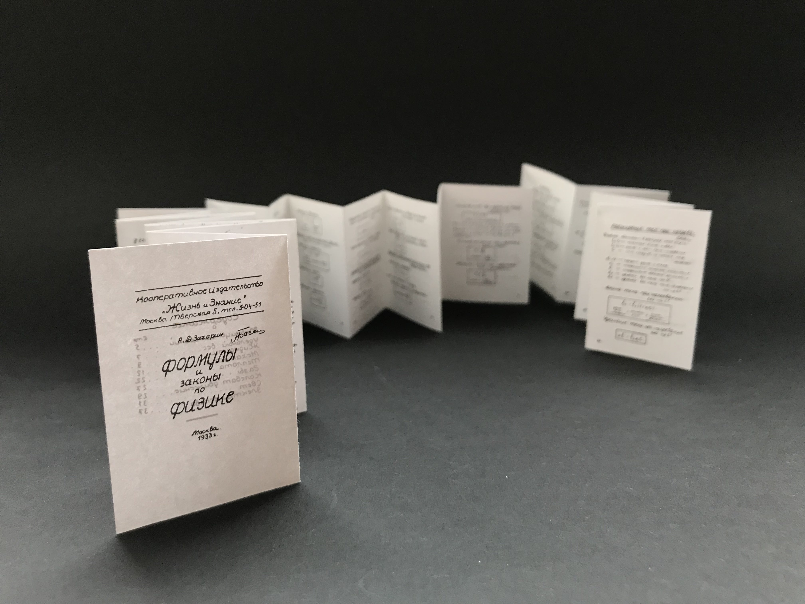

This small book (45x63 mm) is a remake of 1933 book about physics.

The original book looks like being handwritten even though its edition is 3000. Its typeset and content reminded me of cheatsheets which are usually made for school, so I decided to reduce the book size drastically, and it's folding to z-fold, which is typical for the cheatsheets.
I tried to make it even smaller than a pocket size but still readable and easy to read through.
As it’s a printed object, I focused a lot on paper. For the paper, at first, I was looking for 90 gsm and 150 gsm paper.
As I realised that my original book reminds me of a cheat sheet I started to look for the ways the cheat sheet can be made, where and what features it has. It is usually handwritten, messy, tiny and might even be put on skin, clothes or small folded paper.
I looked at Irma's Boom 'Biography in Books'. This miniature book (1.5 X 2 inches) contains a complete overview of her work, with commentary and more than 450 full color illustrations in 704 pages with printed edges. This tiny book consist from plenty of pages but is still small and readable. Irma uses very thin paper for her book.
It’s a collection of sketches each of which is a response to the previous one. In my sequential sketchbook, I was trying to work both with visual and conceptual connections.
Also in case of materials, I decided to focus mostly on collages both digital and physical and on the combination of image and drawings to find new boundaries of the collage technique and increase my skill.
Therefore, I worked with screenprinting, paints, fabric and scanning. I’ve never included fabric in my sketches before, never tried drawing with marker on the glossy magazine paper and never experimented with scanning.
So I find my sequential sketchbook a series of experiments with various materials and improvements of my previous skills. And this sketchbook project was an excellent opportunity to analyse the image you create from its visual and conceptual sides.